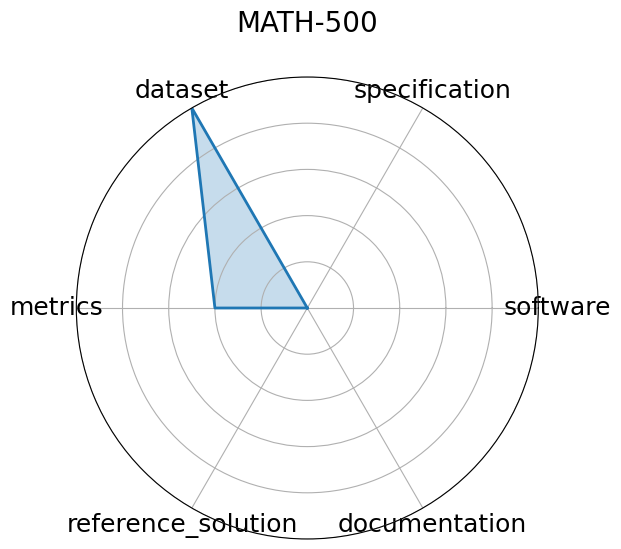

Date: 2025-02-15
Name: MATH-500
Domain: Mathematics
Focus: Math reasoning generalization
Keywords: calculus, algebra, number theory, geometry
Task Types: Problem solving
Metrics: Accuracy
Models: unkown
Citation:
HuggingFaceH4. Math-500. 2025. URL: https://huggingface.co/datasets/HuggingFaceH4/MATH-500.
bibtex: ``` @misc{huggingface2025math500,
title={MATH-500},
author={HuggingFaceH4},
year={2025},
url={https://huggingface.co/datasets/HuggingFaceH4/MATH-500}}
```
Ratings:
Software:
Rating: 0
Reason: No code provided
Specification:
Rating: 0
Reason: No method of presentation and evaluation is not stated. No constraints
Dataset:
Rating: 5
Reason: Problems and solutions are easily downloaded. Could not find a way to download the data
Metrics:
Rating: 2
Reason: Problem spec states that all of the AI reasoning steps are subject to grading, but no specified way to evaluate the steps
Reference Solution:
Rating: 0
Reason: Not given
Documentation:
Rating: 0
Reason: Not given. Implicit instructions to download dataset.
Average Rating: 1.167
Radar Plot: 